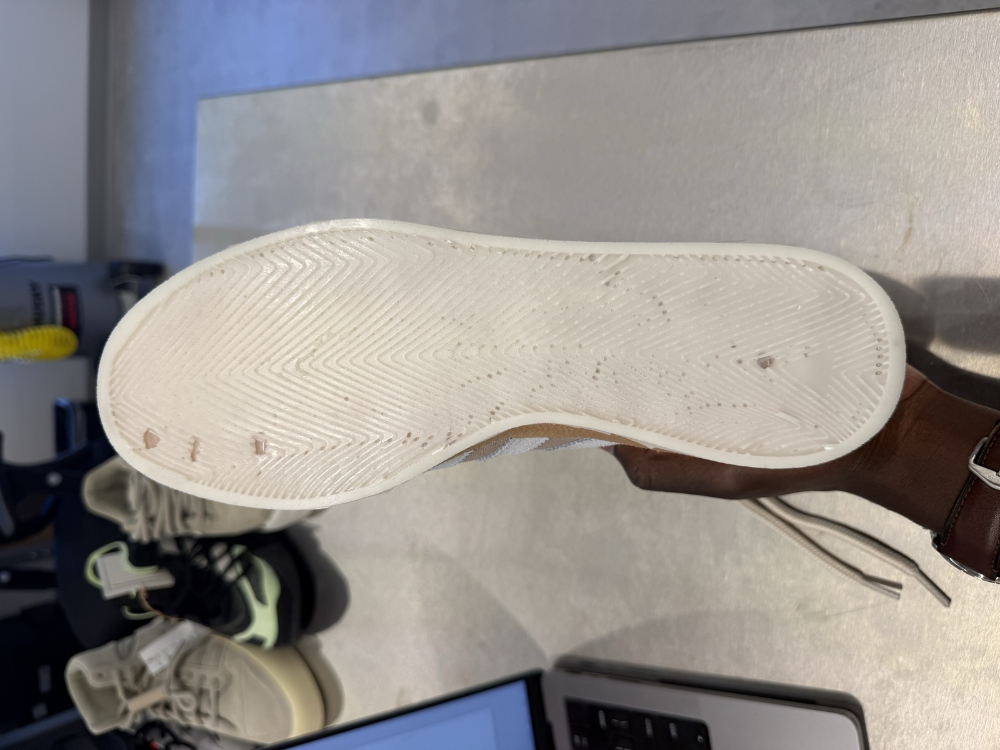
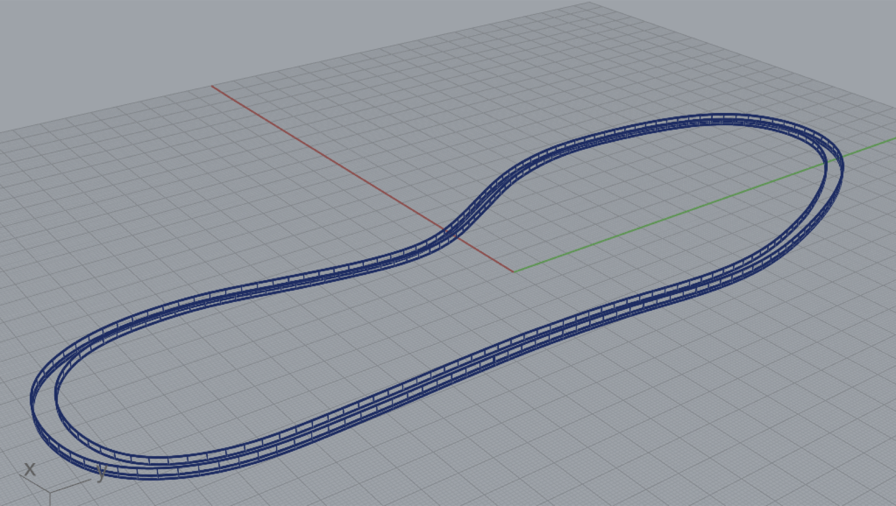
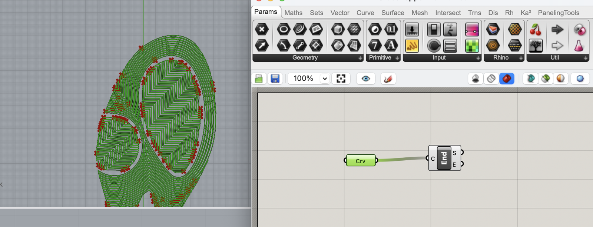
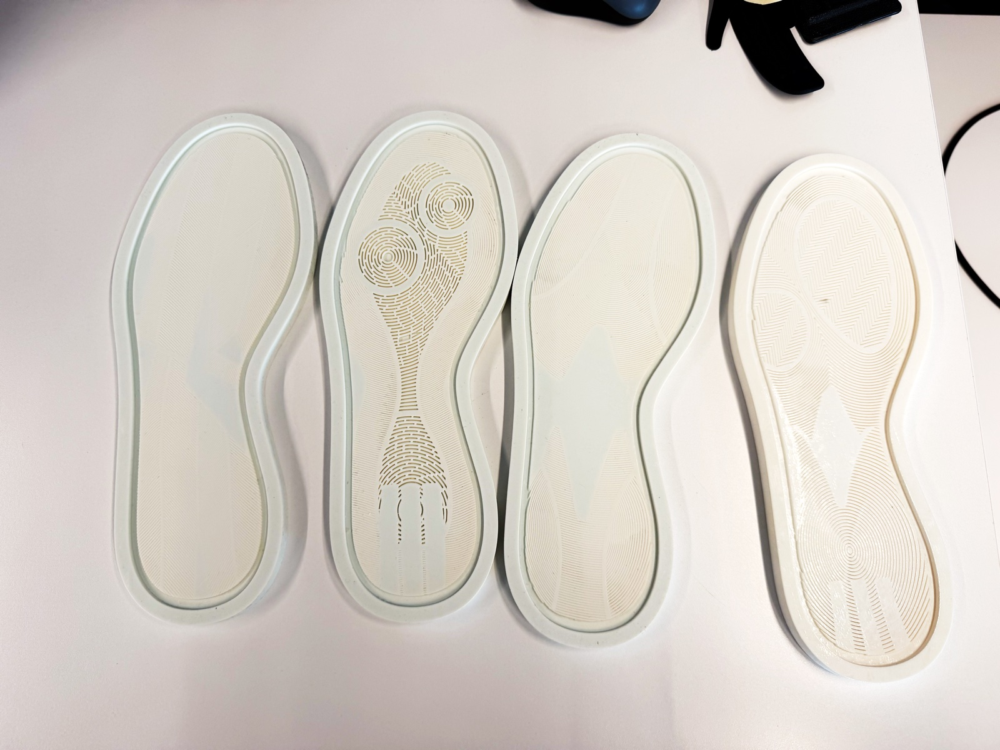
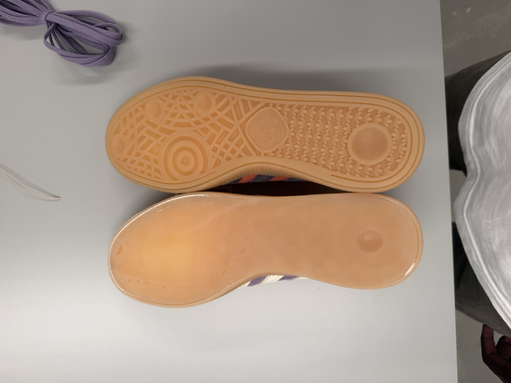

adidas — Basketball Footwear Traction Pattern Testing
As a Product Development Intern on adidas's Basketball Footwear team, I ran an individual project studying how outsole tread pattern affects basketball traction performance. The work moved from CAD pattern adaptation through 3D-printed tooling to physical, pourable TPU prototypes for bio testing.

The Project
Traction patterns have large implications for on court grip. I benchmarked a set of existing adidas basketball traction patterns against each other, then rebuilt each one to fit an adidas spezial so the patterns could be compared head-to-head in bio testing, isolating pattern as the single variable.
CAD: Rhino & Grasshopper
Working from 2D outsole drawings, I used Rhino to trace closed curves for each traction pattern, then used Grasshopper — a visual programming add-on for Rhino — to wire together move, scale, and cage-edit operations. That let me take existing performance basketball traction patterns and reshape them to fit a common spezial outline, so every pattern could be tested on equal footing.


From CAD to Mold
The 2D pattern curves were extended into 3D mold geometry in Rhino, then 3D printed as polyjet tooling, with one mold per traction pattern.

Pouring the Outsoles
To turn the molds into testable outsoles, I sanded down a reference sole to remove its original tread, then mixed and poured a two-part castable polyurethane into each mold, sealing and curing it before demolding. The result was a set of physical outsoles that each carried a different traction pattern on an otherwise identical sole, ready to hand off for wear and bio testing.
